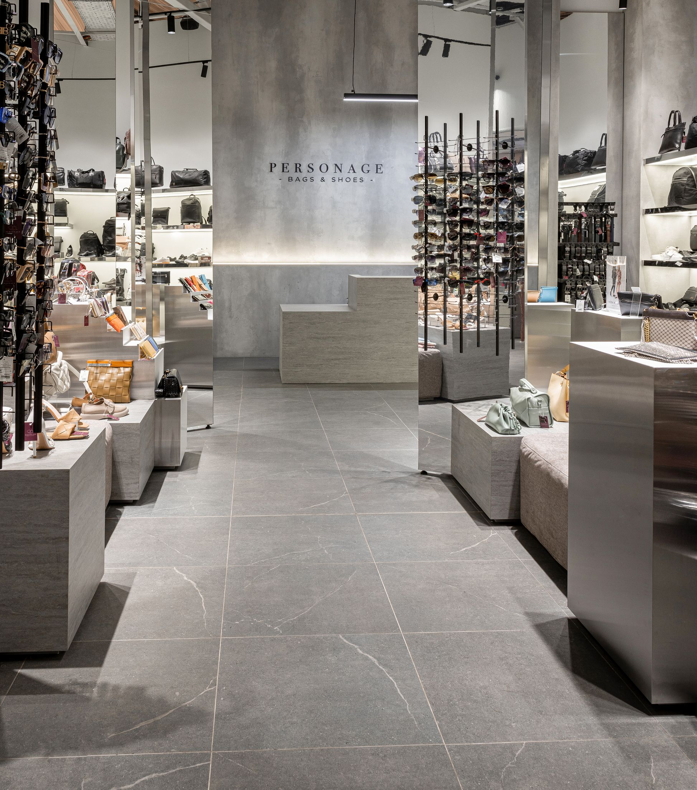
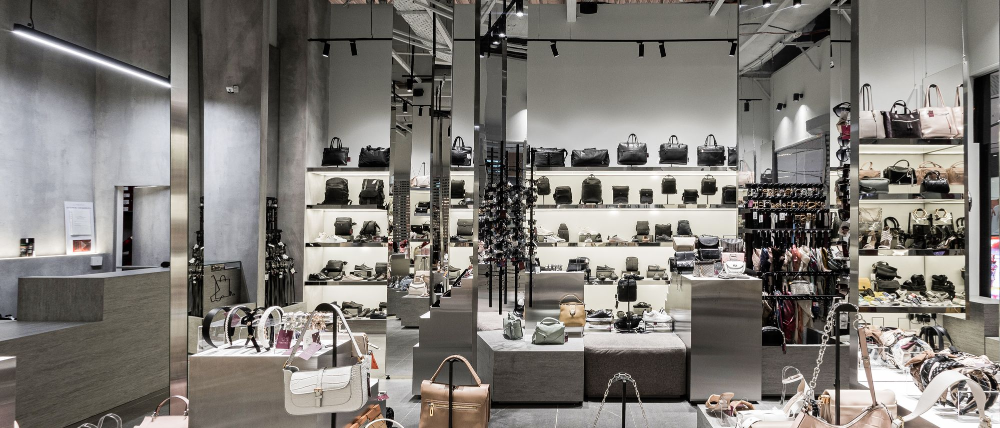
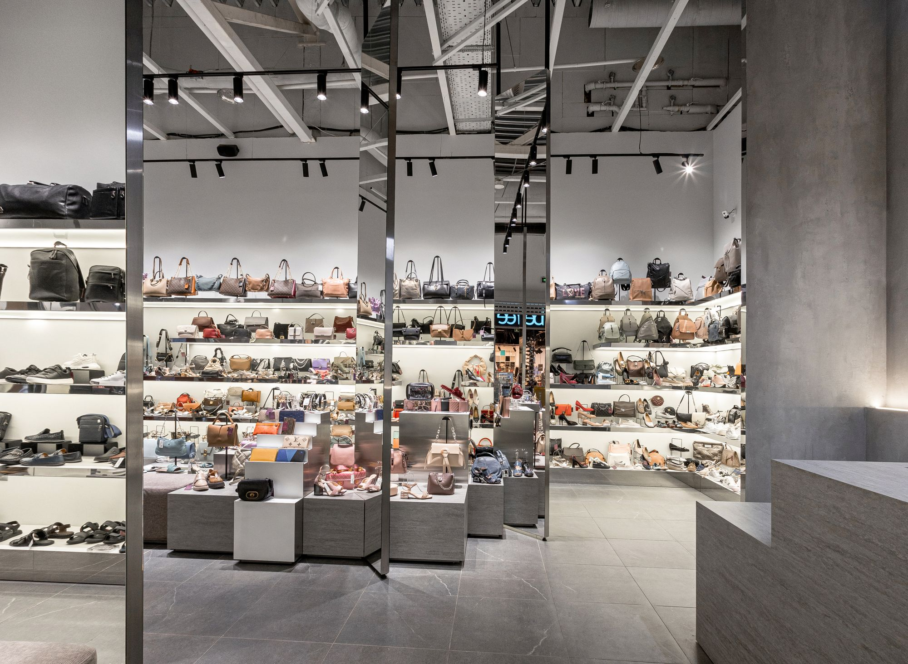
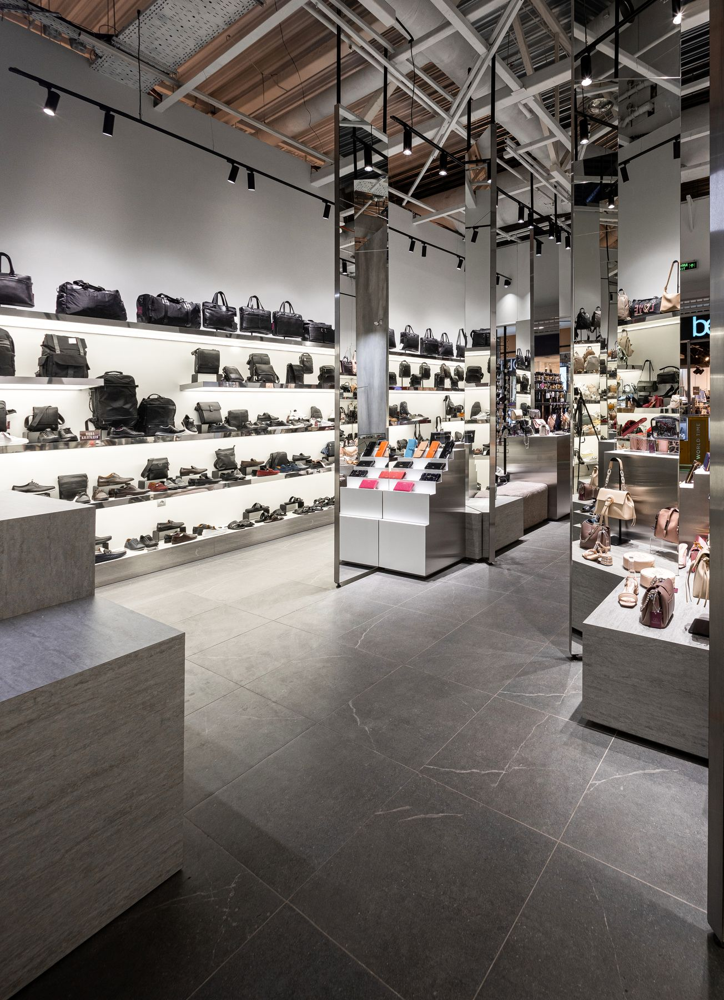
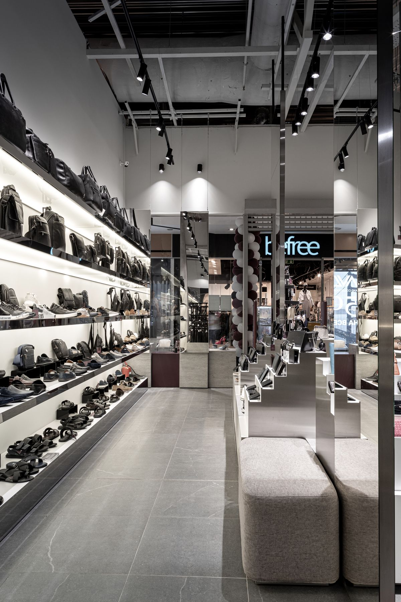
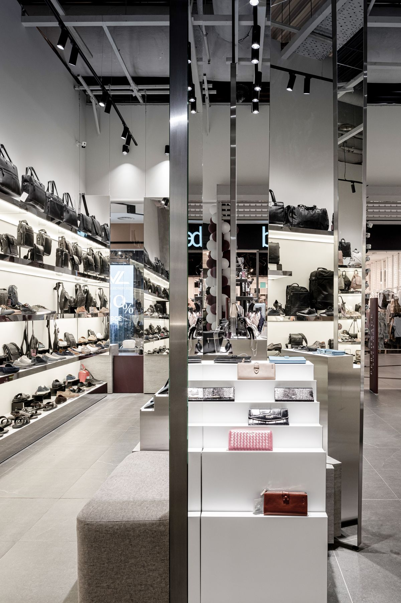
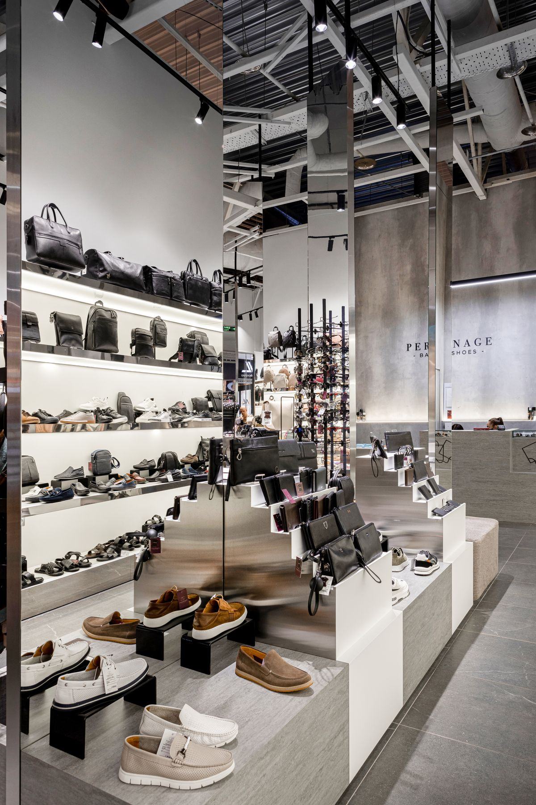
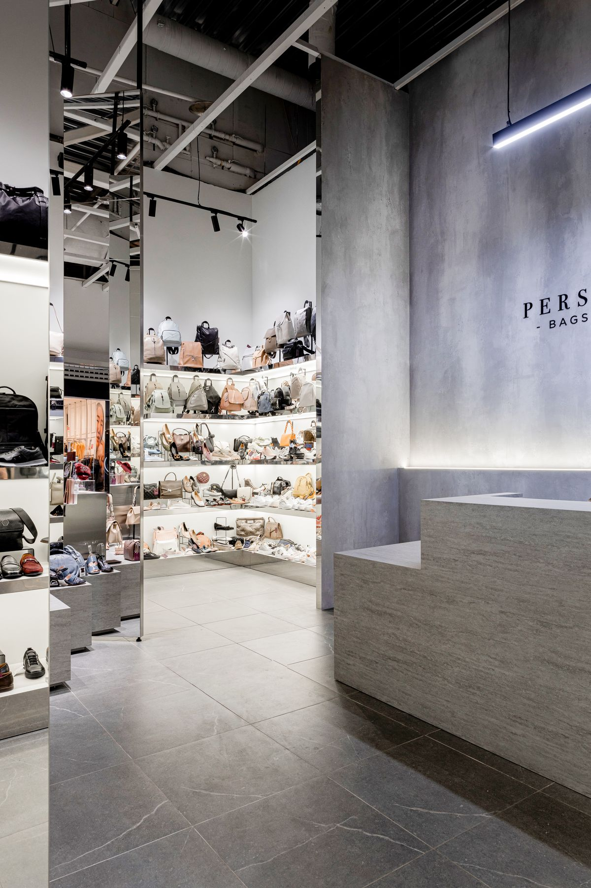
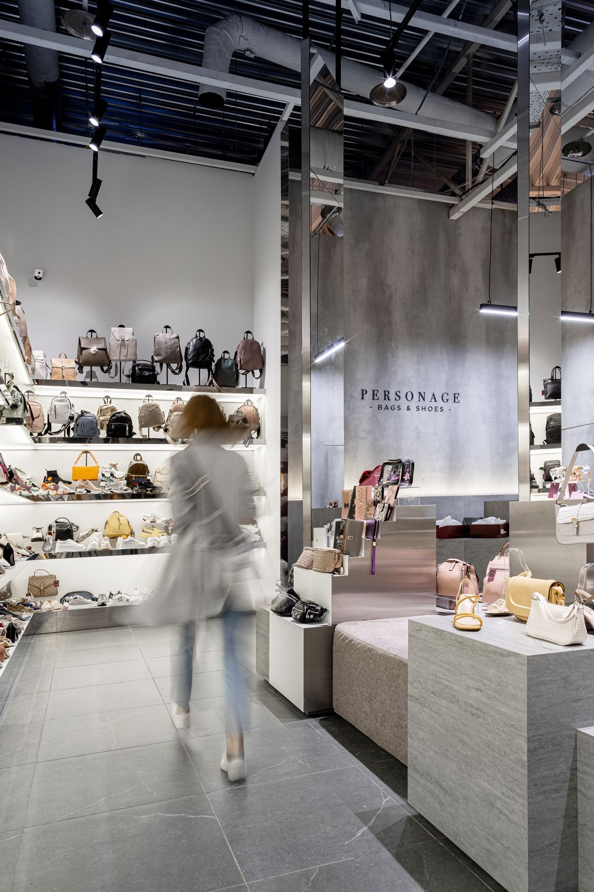

Задача — побудувати навігацію залу так, щоб гість читав асортимент без хаосу полиць.
Рішення: бетонна оболонка, дзеркальні площини, підсвічені стелажі, острівні подіуми під взуття й сумки.


Architecture | Retail
Флагманський бутік сумок і взуття. Простір мовчить — говорить колекція.
Zaporizhzhia, Ukraine
104 m²
2020 · realised
Retail · Bags & Shoes
Задача — побудувати навігацію залу так, щоб гість читав асортимент без хаосу полиць.
Рішення: бетонна оболонка, дзеркальні площини, підсвічені стелажі, острівні подіуми під взуття й сумки.



Нейтральний бетон і світло на полицях: колекція виходить на перший план.


Дзеркальні площини розширюють залу, не сперечаючись із товаром. Підсвічені ніші тримають ритм експозиції.


